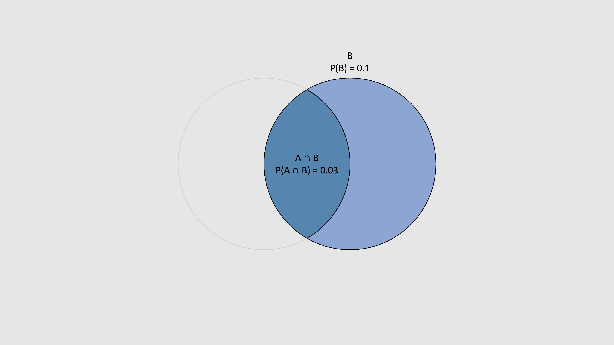

Logical reasoning
Statistical inference
2025-02-17
Statistical inference is logical reasoning
- More specifically, statistical inference is an inductive argument of this form:
\[ \begin{array}{ll} 1. & \text{Past data/observations} \\ 2. & \text{Model of the data generating process (DGP)} \\ \hline \therefore & \text{Future data/predictions} \\ \end{array} \]
Ancient philosophy: Rationalism vs. empiricism

Modern science: Statistical (+ causal) inference

Modern science: Statistical (+ causal) inference

Shmueli (2010) To Explain or to Predict?
Statistical inference

Causal inference

Logical reasoning
Reasoning is the process of drawing a conclusion from one or more premises
An argument is a set of propositions: one or more premises and a conclusion
\[ \begin{array}{ll} 1. & \text{All humans are mortal} \\ 2. & \text{Socrates is a human} \\ \hline \therefore & \text{Socrates is mortal} \\ \end{array} \]
Logical reasoning
Reasoning is the process of drawing a conclusion from one or more premises
An argument is a set of propositions: one or more premises and a conclusion
The set of premises is also known as the evidence or knowledge base
The conclusion is also known as the hypothesis or query
A proposition is a statement, i.e., a declarative sentence that is either true or false
“The sun rises in the east” vs. “Let’s go watch the sunrise!”
“2 + 3 = 4” vs. “x + 3 = 5”
Logical reasoning is reasoning that obeys the rules of logic
Logical reasoning can be broadly categorized into two types:
Deductive reasoning (which obeys the rules of propositional logic)
Inductive reasoning (which obeys the rules of probability theory)
Deductive vs. inductive arguments

Deductive vs. inductive arguments
[Examples]
- Deductive reasoning is truth-preserving
- Inductive reasoning is ampliative
Deductive vs. inductive reasoning
- The goal of deductive reasoning is to determine whether the conclusion is guaranteed to be true, assuming the premises are true
\[ \begin{array}{ll} 1. & \text{All humans are mortal} \\ 2. & \text{Socrates is a human} \\ \hline \therefore & \text{Socrates is mortal} \\ \end{array} \]
- The goal of inductive reasoning is to determine whether the conclusion is likely to be true, assuming the premises are true
\[ \begin{array}{ll} 1. & \text{The sun has risen every morning in recorded history} \\ \hline \therefore & \text{The sun will rise tomorrow morning} \\ \end{array} \]
- Inductive reasoning is fundamental to scientific reasoning (incl. statistical inference)
- Deductive reasoning is the basis of mathematical proof and much of computer science
AI for logical reasoning
Our goal in this series is to program an artificial intelligence (AI), i.e., a computer algorithm capable of deductive and inductive reasoning
To achieve this goal, we need a language for logical reasoning and computer programming
In particular, we will use:
Propositional logic (mathematical language used to formalize deductive reasoning)
Probability theory (mathematical language used to formalize inductive reasoning)
R (programming language used to translate propositional logic and probability theory into a computer algorithm)
AI for deductive reasoning
This AI will be implemented in R as a function named
Pthat:takes one or more premises (evidence, named
E) and a conclusion (hypothesis, namedH) as argumentsP(..., H)returns a
Numericvalue between0and1If
P(..., H) = 1, then the reasoning is deductively valid, i.e.,His necessarily true givenEIf
0 < P(E, H) < 1, then the reasoning is deductively invalidIf
P(E, H) = 0, then the reasoning is deductively invalid and contradictory, i.e.,His necessarily false givenE
Propositional logic: Variables
| English | Logic | R | |
|---|---|---|---|
| it’s raining (A) | \(A\) | A = TRUE |
A = FALSE |
| the streets are wet (B) | \(B\) | B = TRUE |
B = FALSE |
Propositional logic: Operators
| English | Logic | R | ||
|---|---|---|---|---|
| A | \(A\) | A |
||
| not A | \(\lnot A\) | !A |
||
| A and B | \(A \land B\) | A & B |
all(A, B) |
|
| A or B | \(A \lor B\) | A | B |
!(A & B) |
any(A, B) |
| if A then B; A implies B | \(A \implies B\) | A %=>% B |
!A | B |
|
| A if and only if B | \(A \iff B\) | A %<=>% B |
Deductive logic
Argument forms
Modus ponens
Modus tollens
The hypothetical syllogism
Proportional syllogism
The statistical syllogism
Inductive generalization
Induction by confirmation
Analogical argument
Induction by confirmation
Hypothesis
Prediction
Data
Induction by confirmation
The crucial experiment
The inference to the best explanation
The best hypothesis
Proportional syllogism
Probability and proportion
Probability theory
Inductive generalization
XXX
Bayes’ rule
XXX
Knowledge-based AI
Logic (e.g., propositional logic or first-order logic) is a language used to represent knowledge and to reason (draw conclusions, make inferences) based on this knowledge
Logic is used in a knowledge-based AI agent to represent knowledge and to reason (draw conclusions, make inferences) based on this knowledge
In deductive logic the goal is to determine whether an argument is valid (the premises entail the conclusion), using some inference algorithm or rules
In inductive logic the goal is to determine whether an argument is strong (the premises partially entail the conclusion), using some inference algorithm or rules
Deductive reasoning: Propositional logic
The goal is to prove that a conclusion/hypothesis/query is true given some premises/evidence/knowledge known or assumed to be true
\(E \models C\)
\(P(C \mid E) = 1\)
Arguments/Rules of deductive inference
Knowledge-based AI capable of logical reasoning
Knowledge engineering
Argument forms as inference rules of propositional logic/deductive inference:
Modus ponens
And elimination rule
Unit resolution rule
Double negation elimination rule
Implication elimination rule
Biconditional elimination rule
De Morgan’s law (1)
De Morgan’s law (2)
Distributive law (1)
Distributive law (2)
Modus tollens
Propositional symbols/variables
In propositional logic, the terms propositional symbol and propositional variable are often used interchangeably to denote atomic propositions—statements that are either true or false and cannot be broken down into simpler statements. These atomic propositions serve as the foundational building blocks for more complex, compound propositions formed using logical connectives/boolean operators such as AND, OR, and NOT.
A propositional variable has a truth value, i.e., it is either true or false but not both at the same time.
Inductive reasoning: Probability theory
XXX
Setup environment
| A | B | C |
|---|---|---|
| TRUE | TRUE | TRUE |
| TRUE | TRUE | FALSE |
| TRUE | FALSE | TRUE |
| TRUE | FALSE | FALSE |
| FALSE | TRUE | TRUE |
| FALSE | TRUE | FALSE |
| FALSE | FALSE | TRUE |
| FALSE | FALSE | FALSE |
| P | V |
|---|---|
| 1 | TRUE |
Propositional logic-based AI in 8 lines of R code!
library(rlang)
library(flextable)
P <- function(..., H, table = TRUE, flex = TRUE) {
# capture the premises/evidence as a list of quosures
premises <- enquos(...)
# capture the conclusion/hypothesis as a quosure
conclusion <- enquo(H)
# extract variable names
vars <- unique(c(unlist(lapply(premises, all.vars)), all.vars(conclusion)))
# build truth table
truth_table <- expand.grid(replicate(length(vars), c(TRUE, FALSE), simplify = FALSE))
colnames(truth_table) <- vars
# evaluate premises in the context of the truth table
for (i in seq_along(premises)) {
truth_table[[paste0("P", i)]] <- eval_tidy(premises[[i]], data = truth_table)
}
# evaluate evidence and conclusion/hypothesis in the context of the truth table
truth_table <- truth_table %>%
mutate(
E = if_all(starts_with("P"), identity),
H = eval_tidy(conclusion, data = truth_table)
)
# calculate P(H | E)
P_value <- truth_table %>%
summarise(P = mean(H[E])) %>%
pull(P)
# return P value if truth table output is not requested
if (!table) {
return(P_value)
}
# return truth table if formatted truth table output is not requested
if (!flex) {
return(truth_table)
}
# define colors
highlight_color <- "beige" # Standard HTML color name
true_color <- "darkgreen"
false_color <- "darkred"
# convert the truth table into a flextable
truth_table_formatted <- flextable(truth_table) %>%
bold(part = "header") %>% # Bold the header
bold(part = "footer") %>% # Bold the footer
bg(i = which(truth_table$E == TRUE), bg = highlight_color, part = "body") # Highlight E = TRUE rows
# apply text colors
for (col in colnames(truth_table)) {
truth_table_formatted <- truth_table_formatted %>%
color(i = which(truth_table[[col]] == TRUE), j = col, color = true_color) %>%
color(i = which(truth_table[[col]] == FALSE), j = col, color = false_color)
}
# add footer with the calculated P(H | E) value
truth_table_formatted <- truth_table_formatted %>%
add_footer_row(
values = paste("P(H | E) =", round(P_value, 3)),
colwidths = ncol(truth_table)
) %>%
align(align = "right", part = "footer")
# return formatted truth table
return(truth_table_formatted)
}Deductive arguments
Modus ponens
\[ \begin{array}{c} A \implies B \\ A \\ \hline B \end{array} \]
Modus tollens
\[ \begin{array}{c} A \implies B \\ \neg B \\ \hline \neg A \end{array} \]
Affirming the consequent
\[ \begin{array}{c} A \implies B \\ B \\ \hline A \end{array} \]
Denying the antecedent
\[ \begin{array}{c} A \implies B \\ \neg A \\ \hline \neg B \end{array} \]
Modus ponens
Modus ponens is a valid deductive argument that affirms the antecedent to conclude the consequent.
Premises
If it is raining, then the ground is wet
It is raining
Conclusion
- The ground is wet
\[ \begin{array}{ll} 1. & A \implies B \\ 2. & A \\ \hline \therefore & B \end{array} \]
Modus tollens
Modus tollens is a valid deductive argument that denies the consequent to conclude the negation of the antecedent.
Premises
If it is raining, then the ground is wet
The ground is not wet
Conclusion
- It is not raining
\[ \begin{array}{ll} 1. & A \implies B \\ 2. & \neg B \\ \hline \therefore & \neg A \end{array} \]
Affirming the consequent
Affirming the consequent is an invalid deductive argument that affirms the consequent to conclude the antecedent.
Premises
If it is raining, then the ground is wet
The ground is wet
Conclusion
- It is raining
\[ \begin{array}{ll} 1. & A \implies B \\ 2. & B \\ \hline \therefore & A \end{array} \]
Denying the antecedent
Denying the antecedent is an invalid deductive argument that denies the antecedent to conclude the negation of the consequent.
Premises
If it is raining, then the ground is wet
It is not raining
Conclusion
- The ground is not wet
\[ \begin{array}{c} 1. & A \implies B \\ 2. & \neg A \\ \hline \therefore & \neg B \end{array} \]
Hypothetical syllogism
The hypothetical syllogism is a valid deductive argument that combines two conditional statements to conclude a third conditional statement.
Premises
If it is raining, then the ground is wet
If the ground is wet, then the plants grow
Conclusion
- If it is raining, then the plants grow
\[ \begin{array}{c} 1. & A \implies B \\ 2. & B \implies C \\ \hline \therefore & A \implies C \end{array} \]
A | B | C | P1 | P2 | E | H |
|---|---|---|---|---|---|---|
TRUE | TRUE | TRUE | TRUE | TRUE | TRUE | TRUE |
FALSE | TRUE | TRUE | TRUE | TRUE | TRUE | TRUE |
TRUE | FALSE | TRUE | FALSE | TRUE | FALSE | TRUE |
FALSE | FALSE | TRUE | TRUE | TRUE | TRUE | TRUE |
TRUE | TRUE | FALSE | TRUE | FALSE | FALSE | FALSE |
FALSE | TRUE | FALSE | TRUE | FALSE | FALSE | TRUE |
TRUE | FALSE | FALSE | FALSE | TRUE | FALSE | FALSE |
FALSE | FALSE | FALSE | TRUE | TRUE | TRUE | TRUE |
P(H | E) = 1 | ||||||
Proportional syllogism
The proportional syllogism is a logical argument that draws a conclusion based on a proportion.
Premises
A bag contains two blue balls and one white ball
One ball is drawn from the bag
Conclusion
- A blue ball is drawn from the bag
\[ \begin{array}{ll} 1. & B1 \lor B2 \lor W \\ 2. & \neg((B1 \land B2) \lor (B1 \land W) \lor (B2 \land W)) \\ \hline \therefore & B1 \lor B2 \end{array} \]
B1 | B2 | W | P1 | P2 | E | H |
|---|---|---|---|---|---|---|
TRUE | TRUE | TRUE | TRUE | FALSE | FALSE | TRUE |
FALSE | TRUE | TRUE | TRUE | FALSE | FALSE | TRUE |
TRUE | FALSE | TRUE | TRUE | FALSE | FALSE | TRUE |
FALSE | FALSE | TRUE | TRUE | TRUE | TRUE | FALSE |
TRUE | TRUE | FALSE | TRUE | FALSE | FALSE | TRUE |
FALSE | TRUE | FALSE | TRUE | TRUE | TRUE | TRUE |
TRUE | FALSE | FALSE | TRUE | TRUE | TRUE | TRUE |
FALSE | FALSE | FALSE | FALSE | TRUE | FALSE | FALSE |
P(H | E) = 0.667 | ||||||
Statistical syllogism
The statistical syllogism is a logical argument that draws a conclusion about a specific case based on a generalization.
Premises
Most birds can fly
Pingu is a bird
Conclusion
- Pingu can fly
Bayesian reasoning provides a formal framework for the statistical syllogism.
Inductive generalization
Inductive generalization (a.k.a. inductive inference) is a logical argument that draws a conclusion about a generalization based on a specific case.
This type of reasoning moves in the opposite direction of the statistical syllogism: it uses specific cases (observations) as evidence to infer a general conclusion.
Premises
Pingu is a bird and cannot fly
Kiwi is a bird and cannot fly
Ostrich is a bird and cannot fly
Conclusion
- Most birds cannot fly
Scientific reasoning is inductive reasoning
- The rules of propositional logic provide a formal mathematical framework for deductive reasoning by determining whether a conclusion necessarily follows from the premises
- The rules of probability theory provide a formal mathematical framework for inductive reasoning by quantifying the plausibility of a conclusion given the premises

Logical probability function
# Main function to calculate the proportion
P <- function(..., H) {
# Capture all premises (P1, P2, ...) as quosures
premises <- enquos(...)
# Combine all premises into a single evidence expression (E)
evidence_expr <- reduce(premises, ~ expr((!! .x) & (!! .y)))
# Capture the hypothesis as a quosure
hypothesis_expr <- enquo(H)
# Extract variables from evidence and hypothesis
variables <- unique(c(
all.vars(evidence_expr),
all.vars(hypothesis_expr)
))
# Generate set of all possible worlds
possible_worlds <- expand_grid(!!!set_names(rep(list(c(TRUE, FALSE)), length(variables)), variables))
# Filter set of all possible worlds where evidence is true and calculate proportion where hypothesis is true
possible_worlds %>%
mutate(
E = !!evidence_expr,
H = !!hypothesis_expr
) %>%
filter(E) %>%
summarize(proportion = mean(H)) %>%
pull(proportion)
}
# Example Usage: Multiple premises as expressions
P(
P1 = B1 | B2 | W,
P2 = !(B1 & B2) & !(B1 & W) & !(B2 & W),
H = B1 | B2
)[1] 0.6667Logical probability function
P <- function(..., H, p = NULL) {
# capture the premises as a list of quosures
premises <- rlang::enquos(...)
# capture the conclusion as a quosure
conclusion <- rlang::enquo(H)
# extract variable names from premises and conclusion
vars <- unique(c(
unlist(lapply(premises, all.vars)),
all.vars(conclusion)
))
# generate truth table with all possible combinations of variables
truth_table <- expand.grid(replicate(length(vars), c(TRUE, FALSE), simplify = FALSE))
colnames(truth_table) <- vars
# add premises P1, P2, ... to the truth table
for (i in seq_along(premises)) {
premise <- premises[[i]]
truth_table[[paste0("P", i)]] <- rlang::eval_tidy(premise, data = truth_table)
}
# add evidence E to the truth table
truth_table <- truth_table %>%
mutate(E = if_all(starts_with("P"), identity)) # or `rowMeans(pick(starts_with("P"))) == 1`
# add hypothesis H to the truth table
truth_table <- truth_table %>%
mutate(H = rlang::eval_tidy(conclusion, data = truth_table))
# add uniform prior distribution if none provided
if (is.null(p)) {
truth_table <- truth_table %>%
mutate(p = 1 / n())
} else {
if (length(p) != nrow(truth_table)) {
stop("Length of probability vector 'p' must match the number of truth table rows.")
}
truth_table <- truth_table %>%
mutate(p = p)
}
# print truth table
print(truth_table)
# calculate P(H | E)
P <- truth_table %>%
filter(E) %>%
summarise(P = sum(p * H) / sum(p)) %>%
pull(P)
return(P)
}Chance does not cause anything!

Chance does not cause anything!
- Chance is not an entity; it cannot cause anything
- Randomness does not imply causation; it reflects our lack of knowledge or predictability
- Statements like “caused by chance” are inherently meaningless
- Randomness and probability are tools to model uncertainty, not explanations for why things happen
- The language we often can anthropomorphize randomness/chance, leading to misconceptions
- Understanding randomness requires distinguishing between intrinsic unpredictability and practical limitations in prediction
Logical vs frequentist probability
| Feature | Logical Probability | Frequentist Probability |
|---|---|---|
| Definition | Strength of inductive argument/Degree of belief based on available information | Long-run relative frequency in infinite trials |
| Can Compute Probability? | ✅ Yes, by counting possible worlds | ❌ No, requires infinite trials (it can only be estimated) |
| Works for Single Events? | ✅ Yes | ❌ No, must assume hypothetical repetition |
| Requires a Physical Process? | ❌ No, just logic and premises | ✅ Yes, needs repeatable trials |
| Respects the Likelihood Principle? | ✅ Yes | ❌ No, depends on sampling distributions and hypotheticals |
| Requires i.i.d. Observations? | ❌ No, works with dependencies and heterogeneity | ✅ Yes, by definition (but it can be “relaxed”) |
| Example: P(drawing blue ball) | \(\frac{2}{3}\), based on the proportion of possible outcomes | Undefined, unless an infinite number of trials are conducted |
What is statistical inference?
- Statistical inference is inductive logical reasoning: The process of drawing a probable conclusion about a MODEL of the data generating process (DGP) based on model assumptions and incomplete DATA as evidence

Don’t fall for the sin of reification!
What is statistical inference?
- Statistical inference is inductive logical reasoning: The process of drawing a probable conclusion about a MODEL of the data generating process (DGP) based on model assumptions and incomplete DATA as evidence

AI for deductive and inductive reasoning
This AI will be implemented in R as a function named
Pthat:takes one or more premises (evidence, named
E), a conclusion (hypothesis, namedH), and an optional prior probability distribution (namedp) as argumentsP(..., H, p = NULL)returns a
Numericvalue between0and1, indicating how stronglyHfollows fromEIf
P(..., H) = 1, then the reasoning is deductively valid, i.e.,His true givenEIf
0 < P(E, H) < 1, then the reasoning is deductively invalid, with the value measuring inductive strengthIf
P(E, H) = 0, then the reasoning is deductively invalid and contradictory, i.e.,His false givenE